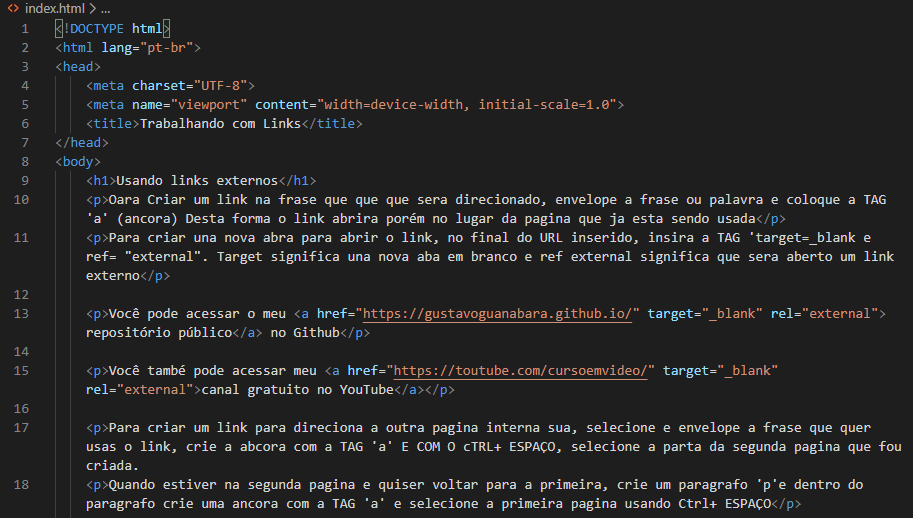
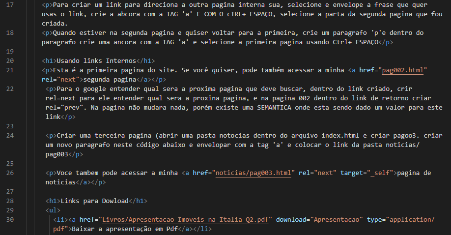
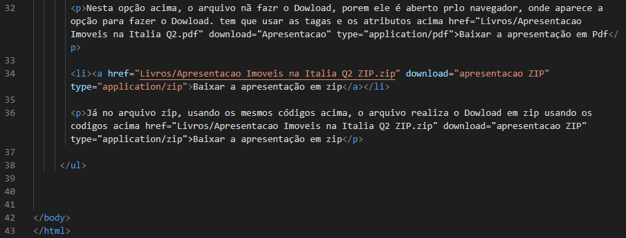
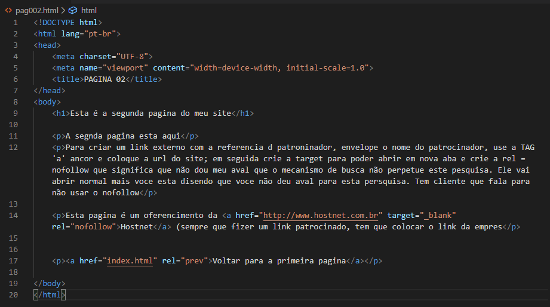
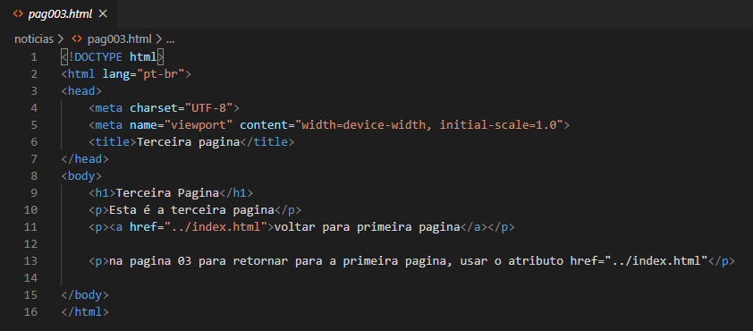

Oara Criar um link na frase que que que sera direcionado, envelope a frase ou palavra e coloque a TAG 'a' (ancora) Desta forma o link abrira porém no lugar da pagina que ja esta sendo usada
Para criar una nova abra para abrir o link, no final do URL inserido, insira a TAG 'target=_blank e ref= "external". Target significa una nova aba em branco e ref external significa que sera aberto um link externo
Você pode acessar o meu repositório público no Github
Você també pode acessar meu canal gratuito no YouTube
Para criar um link para direciona a outra pagina interna sua, selecione e envelope a frase que quer usas o link, crie a abcora com a TAG 'a' E COM O cTRL+ ESPAÇO, selecione a parta da segunda pagina que fou criada.
Quando estiver na segunda pagina e quiser voltar para a primeira, crie um paragrafo 'p'e dentro do paragrafo crie uma ancora com a TAG 'a' e selecione a primeira pagina usando Ctrl+ ESPAÇO
Esta é a primeira pagina do site. Se você quiser, pode também acessar a minha segunda pagina
Para o google entender qual sera a proxima pagina que deve buscar, dentro do link criado, crir rel=next para ele entender qual sera a proxina pagina, e na pagina 002 dentro do link de retorno criar rel="prev". Na pagina não mudara nada, porém existe uma SEMANTICA onde esta sendo dado um valor para este link
Criar uma terceira pagina (abrir uma pasta notocias dentro do arquivo index.html e criar pagoo3. criar um novo paragrafo neste código abaixo e envelopar com a tag 'a' e colocar o link da pasta noticias/pag003
Voce tambem pode acessar a minha pagina de noticias
Nesta opção acima, o arquivo nã fazr o Dowload, porem ele é aberto prlo navegador, onde aparece a opção para fazer o Dowload. tem que usar as tagas e os atributos acima href="Livros/Apresentacao Imoveis na Italia Q2.pdf" download="Apresentacao" type="application/pdf">Baixar a apresentação em Pdf
Já no arquivo zip, usando os mesmos códigos acima, o arquivo realiza o Dowload em zip usando os codigos acima href="Livros/Apresentacao Imoveis na Italia Q2 ZIP.zip" download="apresentacao ZIP" type="application/zip">Baixar a apresentação em zip
Códigos usados



Pagina 02

Pagina 03
